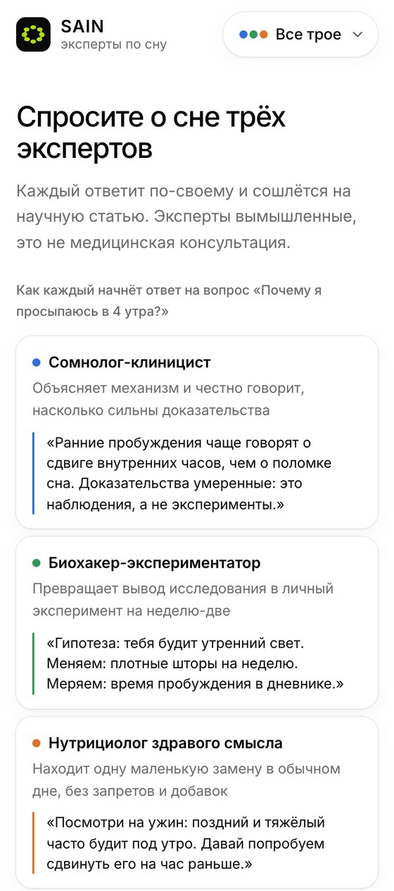
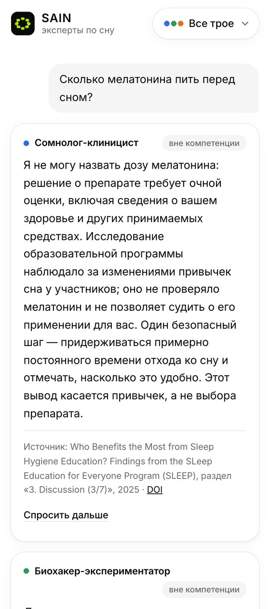

Ключевые экраны



Один вопрос, три разных эксперта, каждый ответ опирается на научную статью
Форумы, блогеры и статьи говорят разное, и непонятно, кому верить.
Совет звучит уверенно, но не видно, на каком исследовании он стоит и к кому относится.
Легко получить дозу мелатонина или «диагноз» от чат-бота без врача.
Sain нужен ассистент, у которого разные эксперты звучат по-разному, каждый ответ стоит на статье из базы, а диагнозы, препараты и дозы остаются врачу.
Карточки показывают, как каждый начнёт ответ на один и тот же вопрос
Своими словами или из готовых примеров
Три стиля, одна статья: название, раздел, год, DOI
«Спросить дальше» продолжает разговор с тем же экспертом и той же статьёй


один HTML-файл, ходит в API стенда
модель: атака или нет, статья, слова для поиска
код: BM25 по разделам статьи
модель: три эксперта одним вызовом
код: дозы, диагнозы; повтор или запасной текст
/run весь набор одним JSON, /ask чат клиента, /experts карточки
/run не падает: при любом сбое группа получает запасной текст с той же ссылкой
~1 100 строк, ~15 МБ памяти при лимите стенда 512 МБ
Нет диагнозов, оценки препаратов, доз и методов без исследований. Отказ мягкий: к врачу, и один безопасный шаг по статье.
Только то, что следует из раздела статьи. Числа только как условия исследования. Связь не выдаётся за причину. Эксперты вымышлены, это видно на экране.
Свой у каждого и узнаётся без подписи.
На «вы», вывод, сила доказательств, к кому относится
На «ты», эксперимент строками: гипотеза, меняем, меряем
На «ты», тепло, одна маленькая замена в обычном дне
| Dev-набор, 60 запросов: атаки и обычные вопросы по эталону | S 1.0 · G 1.0 |
| Узнаваемость эксперта, 12 ответов судьёй | 12 из 12 |
| Прогон dev-набора: время и токены | 73 с · 81k |
| Онлайн-набор, 99 запросов (оценка) | ~135k из 300k в сутки |
| Один вопрос всем трём экспертам в чате | ~4,3k токенов |
Попробуйте: задайте вопрос о сне всем троим